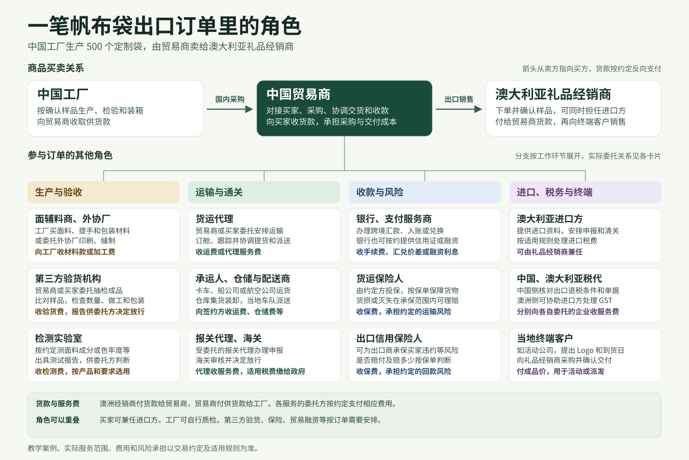
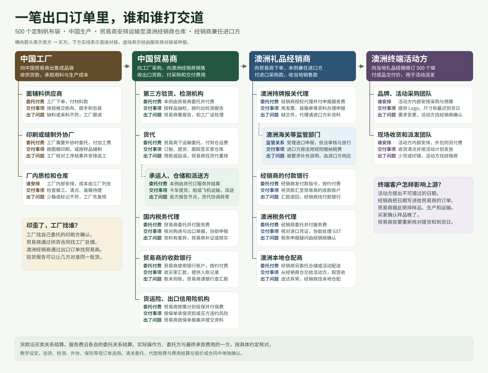

章节目录
第 02 章 · 跨境交易
外贸订单怎么做
以 500 个印 Logo 的帆布袋为例，跟一遍从找到买家到交货、收款的过程。
思维导图

帆布袋订单的角色地图
从商品买卖展开生产验收、运输通关、收款与保险。

谁委托谁，谁向谁付款
从工厂、贸易商、澳洲经销商和活动方四侧追踪直接对接关系。
具体情境
教学情境 澳大利亚礼品经销商有客户需要 500 个定制帆布袋，要求活动前在墨尔本收货。中国贸易商负责把采购需求变成能兑现的报价。
- 找到客户与需求。 可以从展会、B2B 平台询价（RFQ）和目标公司目录找线索。澳洲礼品商 Promotion Products 的公开供应商表单会问起订量、美元 FOB 单价、印刷方式、图稿确认后的生产时间和样品安排。出现在目录中是潜在线索，具体询盘还要有数量、要求和期限。
- 拿相同规格找供应商。 把尺寸、面料、Logo、数量及交货要求写清。假设工厂甲 500 个起订、每个 2.35 美元，工厂乙每个 2.10 美元但须订 1,000 个。起订总货款分别是 1,175 与 2,100 美元。乙方案多出的 500 个带客户 Logo，销路与资金占用由下单前确认。
- 核算时间，再报价。 假设样品 5 天、寄样 5 天、客户确认 2 天、大货 14 天，从工厂提货到墨尔本签收 14–18 天。顺序合计 40–44 天，不能按最快 40 天承诺第 42 天前必到。报价写清从哪天起算、谁负责哪些运输和进口事项、何时收款。
- 交付、对账与收尾。 保存确认样、采购订单、验货和装箱记录。货代安排运输并更新运单，进口方与受托服务方办理进口，贸易商跟踪签收、尾款与异常处理。约定的结算条件决定每一笔现金何时发生。
每个角色解决什么问题
- 货代与承运人
- 货代组织订舱、提货和派送等交接。承运人执行具体运输，费用按服务合同结算。
- 报关代理与税代
- 报关代理办理货物进出境申报。税务代理受企业委托处理申报、税务凭证等事项。具体委托主体和费用范围以合同及申报文件核实。
- 银行与保险
- 银行处理汇款等结算服务。货运保险与出口信用保险分别对应约定的运输损失和回款风险，实际保障看保单。
公开核查案例：一批管道固定支架
历史披露 澳大利亚的 644 号案件核查材料把宁波 Fenghui 列为出口商、A C Plumbing Supplies（ACP）列为进口方，并在出口商报告中记录了包括 Qinyan 在内的制造方。进口商报告核对过商业发票、提单、进口申报和付款凭证。它们分别支持买卖主体、运输身份、进口申报身份和回款的判断。具体一票的服务商和价格仍以公开文件能确认的范围为限。
关键判断
- 把客户的到货期限拆成每次交接
- 工厂的生产周期从确认样品后起算。验货、装箱、提货、运输和签收都要有时间。
- 销售主体、进口主体和服务执行方逐一核对
- 从采购与销售合同、物流委托和报关资料查证，尤其要分清承担税费的一方与提交申报的主体。
讨论题
先讨论，再展开参考分析。
客户晚 3 天确认样品，怎么更新交期？
在其他环节耗时不变的假设下，整条时间线顺延 3 天。先核对工厂能否按新日期完成、货代能否接货，再与客户确认新方案及费用。
货代报价写了门到门，还要确认哪些内容？
至少核对提货点、送达点、运输与清关服务范围、税费是否另计、资料谁提供、预计提货和到货时间。再把这段时间放进整单排期。